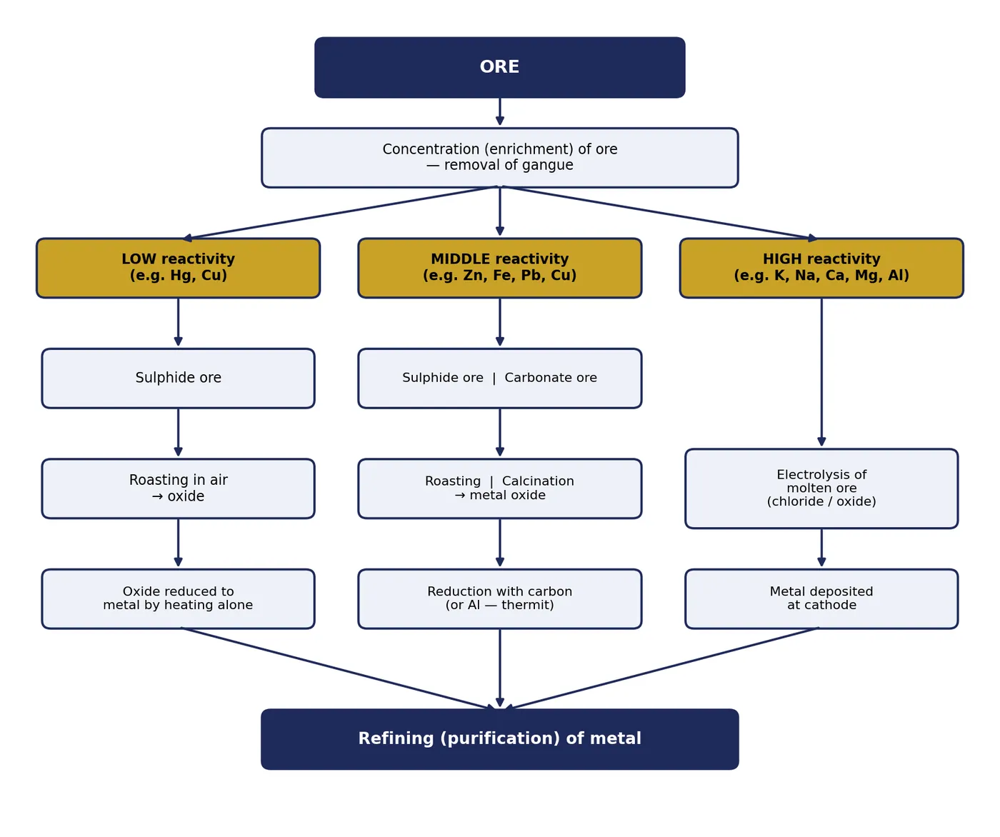
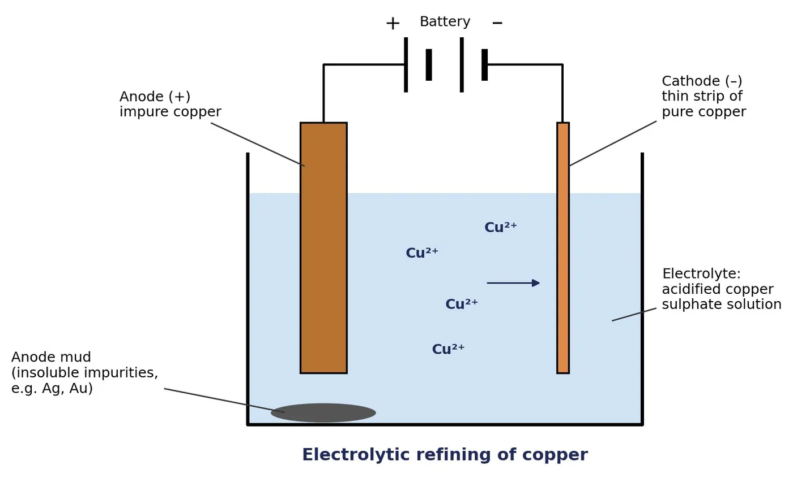
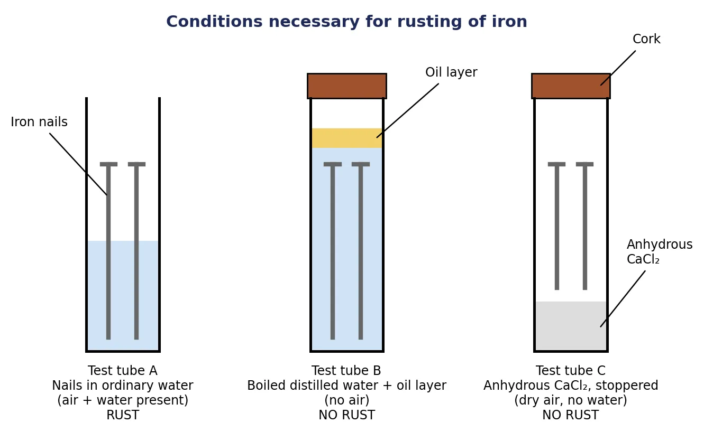

Occurrence of metals: key terms
The earth’s crust is the major source of metals. Sea water also contains soluble salts such as sodium chloride and magnesium chloride.
| Term | Meaning | Example |
|---|---|---|
| Mineral | Naturally occurring element or compound found in the earth’s crust. | Bauxite, haematite |
| Ore | A mineral from which a metal can be extracted profitably. All ores are minerals, but all minerals are not ores. | Cinnabar (HgS), zinc blende (ZnS) |
| Gangue | Unwanted impurities (soil, sand, rocky matter) present in an ore. | Sand (SiO2) in ore |
| Metallurgy | The complete process of extracting a metal from its ore and refining it for use. | — |
| Native / free state | Metals so unreactive that they are found uncombined in nature. | Gold, silver, platinum, copper (partly) |
Types of ores
| Type of ore | Metals usually found this way | Examples |
|---|---|---|
| Oxide | Al, Fe, Sn, Mn, Zn, Cu | Bauxite, haematite, cassiterite, pyrolusite |
| Sulphide | Zn, Pb, Cu, Hg, Ag, Fe | Zinc blende, galena, copper glance, cinnabar |
| Carbonate | Ca, Mg, Zn, Fe, Cu | Limestone, magnesite, calamine, siderite, malachite |
| Halide (chloride/fluoride) | Na, K, Mg, Ca, Ag, Al | Rock salt, sylvite, carnallite, fluorspar, cryolite |
| Sulphate | Ca, Mg, Ba | Gypsum, Epsom salt, barytes |
| Nitrate | Na, K | Chile saltpetre, saltpetre (nitre) |
Complete list of important ores
Ores marked ★ are the ones asked most often in board exams.
| Metal | Ore (common name) | Formula | Type |
|---|---|---|---|
| Potassium (K) | Sylvite | KCl | Chloride |
| Carnallite | KCl·MgCl2·6H2O | Chloride | |
| Saltpetre (nitre) | KNO3 | Nitrate | |
| Sodium (Na) | ★ Rock salt | NaCl | Chloride |
| Chile saltpetre | NaNO3 | Nitrate | |
| Borax | Na2B4O7·10H2O | Borate | |
| Calcium (Ca) | ★ Limestone | CaCO3 | Carbonate |
| Gypsum | CaSO4·2H2O | Sulphate | |
| Fluorspar | CaF2 | Fluoride | |
| Dolomite (Ca and Mg) | CaCO3·MgCO3 | Carbonate | |
| Magnesium (Mg) | Magnesite | MgCO3 | Carbonate |
| Epsom salt | MgSO4·7H2O | Sulphate | |
| Carnallite | KCl·MgCl2·6H2O | Chloride | |
| Aluminium (Al) | ★ Bauxite | Al2O3·2H2O | Oxide |
| Cryolite | Na3AlF6 | Fluoride | |
| Corundum | Al2O3 | Oxide | |
| Zinc (Zn) | ★ Zinc blende | ZnS | Sulphide |
| ★ Calamine | ZnCO3 | Carbonate | |
| Zincite | ZnO | Oxide | |
| Iron (Fe) | ★ Haematite | Fe2O3 | Oxide |
| Magnetite | Fe3O4 | Oxide | |
| Limonite | 2Fe2O3·3H2O | Oxide | |
| Siderite | FeCO3 | Carbonate | |
| Iron pyrites (not used for iron) | FeS2 | Sulphide | |
| Tin (Sn) | Cassiterite (tinstone) | SnO2 | Oxide |
| Lead (Pb) | ★ Galena | PbS | Sulphide |
| Copper (Cu) | ★ Copper glance | Cu2S | Sulphide |
| Copper pyrites | CuFeS2 | Sulphide | |
| Cuprite (ruby copper) | Cu2O | Oxide | |
| Malachite | CuCO3·Cu(OH)2 | Carbonate | |
| Mercury (Hg) | ★ Cinnabar | HgS | Sulphide |
| Silver (Ag) | Argentite (silver glance) | Ag2S | Sulphide |
| Horn silver | AgCl | Chloride | |
| Manganese (Mn) | Pyrolusite | MnO2 | Oxide |
| Chromium (Cr) | Chromite | FeO·Cr2O3 | Oxide |
| Gold, Platinum | Mostly native (free) | Au, Pt | — |
🧠 Remember
Metals at the bottom of the activity series (Au, Ag, Pt) are least reactive → found free. Metals at the top (K, Na, Ca, Mg, Al) are so reactive they are never found free. Many ores are oxides, because oxygen is abundant and reactive; sulphide and carbonate ores are converted to oxides before reduction.
Activity series and method of extraction
The method used to extract a metal depends on its position in the activity series (its reactivity).
| Reactivity | Metals | Method of extraction |
|---|---|---|
| High | K, Na, Ca, Mg, Al | Electrolytic reduction (electrolysis of molten ore) |
| Middle | Zn, Fe, Pb, Cu | Roasting / calcination → oxide, then reduction with carbon (coke) or a more reactive metal |
| Low | Hg, Cu (from Cu2S) | Heating the sulphide ore in air (self-reduction) |
| Very low | Ag, Au, Pt | Found in free (native) state; only need purification |

Every extraction involves three broad steps:
- Enrichment (concentration) of the ore: removing gangue.
- Extraction of the metal: converting the concentrated ore to metal (method depends on reactivity).
- Refining: purifying the impure metal.
Enrichment (concentration) of ores
Ores mined from the earth contain large amounts of gangue. It must be removed before extraction. The method depends on the difference in physical or chemical properties between the gangue and the ore.
| Method | Principle | Used for |
|---|---|---|
| Hydraulic washing (gravity separation) | Heavier ore particles settle; lighter gangue is washed away by water. | Oxide ores (e.g. haematite) |
| Froth flotation | Ore particles are wetted by oil and rise with the froth; gangue is wetted by water and sinks. | Sulphide ores (e.g. ZnS, Cu2S) |
| Magnetic separation | Magnetic ore is attracted by a magnet; non-magnetic gangue is not. | Magnetic ores (e.g. magnetite) |
Extracting metals low in the activity series
Oxides of these metals are unstable; they can be reduced to the metal by heating alone.
(a) Mercury from cinnabar (HgS)
Cinnabar is heated in air. It is first converted to mercuric oxide, which on further heating is reduced to mercury.
(b) Copper from copper glance (Cu2S)
Copper glance is heated in air. Part of it is oxidised to copper(I) oxide, which then reacts with the remaining Cu2S to give copper metal (self-reduction).
⭐ Board favourite
“How is mercury obtained from its ore? Write the equations.” Always write both steps with balanced equations and mention that heating alone is enough because mercury is low in the activity series.
Extracting metals in the middle of the activity series
Metals like Zn, Fe, Pb and Cu are moderately reactive. They are usually found as sulphides or carbonates. It is easier to obtain a metal from its oxide than from its sulphide or carbonate, so the ore is first converted to an oxide.
Step 1: Conversion to oxide (roasting and calcination)
| Point of difference | Roasting | Calcination |
|---|---|---|
| Type of ore | Sulphide ore | Carbonate ore |
| Condition | Heated strongly in the presence of excess air | Heated strongly in limited air (or absence of air) |
| Gas given out | Sulphur dioxide (SO2) | Carbon dioxide (CO2) |
| Example | 2ZnS + 3O2 → 2ZnO + 2SO2 | ZnCO3 → ZnO + CO2 |
Equations for zinc (asked very often)
More examples of roasting and calcination
| Ore | Process | Equation |
|---|---|---|
| Galena (PbS) | Roasting | 2PbS + 3O2 → 2PbO + 2SO2 |
| Cinnabar (HgS) | Roasting | 2HgS + 3O2 → 2HgO + 2SO2 |
| Copper glance (Cu2S) | Roasting | 2Cu2S + 3O2 → 2Cu2O + 2SO2 |
| Siderite (FeCO3) | Calcination | FeCO3 → FeO + CO2 |
| Malachite | Calcination | CuCO3·Cu(OH)2 → 2CuO + CO2 + H2O |
| Limestone (CaCO3) | Calcination | CaCO3 → CaO + CO2 |
| Magnesite (MgCO3) | Calcination | MgCO3 → MgO + CO2 |
| Bauxite (Al2O3·2H2O) | Calcination (removes water) | Al2O3·2H2O → Al2O3 + 2H2O |
💡 Tip
Calcination also removes water of crystallisation (as in bauxite) and volatile impurities, not just CO2. CaO and MgO from calcination are not reduced by carbon: Ca and Mg are obtained by electrolysis.
Step 2: Reduction of the oxide
(i) Reduction with carbon (coke): carbon acts as the reducing agent and removes oxygen from the metal oxide.
(ii) Reduction with a more reactive metal (displacement): highly reactive metals such as sodium, calcium and aluminium can displace less reactive metals from their compounds. These reactions are highly exothermic: so much heat is released that the metal is produced in the molten state.
Thermit reaction
The reaction of iron(III) oxide with aluminium is called the thermit reaction. It produces molten iron and is used to join railway tracks and cracked machine parts (thermit welding).
🤔 Why aluminium?
Aluminium is more reactive than iron and has a greater affinity for oxygen, so it removes oxygen from Fe2O3. Here Fe2O3 is reduced and Al is oxidised; aluminium is the reducing agent.
Other displacement reactions using aluminium:
Solved examples: metals of middle reactivity
Example 1 Zinc from zincite (ZnO)
The ore is already an oxide, so only reduction is needed.
Example 2 Lead from galena (PbS)
Sulphide ore, so roasting first, then reduction with carbon.
Example 3 Iron from haematite (Fe2O3)
Oxide ore, reduced with coke (carbon). In industry this is done in a blast furnace, where coke first forms carbon monoxide, which reduces the oxide.
Limestone is added as a flux to remove sandy gangue as slag:
Example 4 Iron from siderite (FeCO3)
Carbonate ore, so calcination first.
Example 5 Copper from malachite
Carbonate ore, calcined to copper(II) oxide, then reduced.
Example 6 Tin from cassiterite (SnO2)
Oxide ore, reduced directly with carbon.
Example 7 Manganese from pyrolusite (MnO2)
Reduced by aluminium (see displacement above).
🧭 How to decide the steps
Look at the ore type. Sulphide → roasting, carbonate → calcination, oxide → go straight to reduction. Then check reactivity: middle metals → carbon or aluminium; high metals → electrolysis.
Extracting metals high in the activity series
Metals like Na, K, Ca, Mg and Al cannot be obtained by heating their oxides with carbon, because they have more affinity for oxygen than carbon does. They are obtained by electrolytic reduction of their molten chlorides or oxides.
During electrolysis, the metal is deposited at the cathode (negative electrode) and a non-metal is liberated at the anode (positive electrode).
Electrolysis of molten sodium chloride
More examples of electrolytic reduction
| Metal (source) | Cathode | Anode |
|---|---|---|
| Potassium: molten KCl (from sylvite/carnallite) | K+ + e– → K | 2Cl– → Cl2 + 2e– |
| Magnesium: molten MgCl2 (from carnallite or sea water) | Mg2+ + 2e– → Mg | 2Cl– → Cl2 + 2e– |
| Calcium: molten CaCl2 | Ca2+ + 2e– → Ca | 2Cl– → Cl2 + 2e– |
| Aluminium: alumina (Al2O3) from bauxite | Al3+ + 3e– → Al | 2O2– → O2 + 4e– |
For aluminium, alumina is dissolved in molten cryolite, which lowers its melting point and increases conductivity. Carbon (graphite) is used as the electrodes. The oxygen released at the anode reacts with the carbon anode (C + O2 → CO2), so the anodes are replaced from time to time.
⚠️ Note
The ore must be molten, not an aqueous solution. In water, H+ ions are discharged at the cathode instead, and hydrogen is formed rather than sodium.
Refining of metals: electrolytic refining
Metals obtained by reduction contain impurities. The most widely used method of purification is electrolytic refining. Metals such as copper, zinc, tin, nickel, silver and gold are refined this way.

| Part of cell | What is used |
|---|---|
| Anode (+) | Thick block of impure metal |
| Cathode (–) | Thin strip of pure metal |
| Electrolyte | Solution of a salt of the metal; for copper: acidified copper sulphate solution |
Working
- On passing current, the impure metal from the anode dissolves into the electrolyte as ions.
- An equal amount of pure metal from the electrolyte is deposited on the cathode, which grows thicker.
- Soluble impurities go into the solution.
- Insoluble impurities settle at the bottom of the anode as anode mud (contains valuable metals like silver and gold).
Corrosion
Corrosion is the slow eating away of a metal when its surface is attacked by air, moisture, acids or other substances around it.
| Metal | What happens | Substance formed |
|---|---|---|
| Silver | Turns black after some time in air | Silver sulphide (Ag2S): reacts with sulphur/H2S in air |
| Copper | Loses its shine; gets a green coating | Basic copper carbonate: reacts with moist CO2 in air |
| Iron | Gets a reddish-brown flaky coating | Hydrated iron(III) oxide, Fe2O3·xH2O (rust) |
Rusting of iron
Rusting is the corrosion of iron. When iron is exposed to moist air for a long time, it gets coated with a reddish-brown substance called rust (Fe2O3·xH2O). Both air (oxygen) and water (moisture) are necessary for rusting.
Activity: to show that air and water are both necessary for rusting

| Tube | Set-up | Present | Observation |
|---|---|---|---|
| A | Iron nails in ordinary tap water, left open | Air + water | Nails rust |
| B | Nails in boiled distilled water (removes dissolved air) with a layer of oil on top (stops air dissolving back); corked | Water only | No rust |
| C | Nails with anhydrous calcium chloride (absorbs moisture); corked | Dry air only | No rust |
Conclusion: iron rusts only when both air and water are present.
🤔 Why each step?
Water is boiled to remove dissolved air; oil prevents air from dissolving again; anhydrous CaCl2 absorbs moisture from the air in tube C.
Prevention of corrosion
- Painting, oiling or greasing: forms a layer that keeps air and moisture away.
- Galvanisation: coating iron or steel with a thin layer of zinc. Galvanised iron is protected even if the zinc coating is broken, because zinc is more reactive than iron and gets corroded first.
- Chrome plating / tin plating (electroplating): coating with a less easily corroded metal.
- Anodising: making the natural protective oxide layer on aluminium thicker by electrolysis.
- Alloying: mixing the metal with other elements, e.g. stainless steel (iron + nickel + chromium) does not rust.
Alloys
An alloy is a homogeneous mixture of two or more metals, or a metal and a non-metal. It is prepared by melting the primary metal and dissolving the other elements in it in definite proportions, then cooling.
- Pure iron is soft and stretches easily when hot; mixed with a small amount of carbon (about 0.05%) it becomes hard and strong (steel).
- If one of the metals is mercury, the alloy is called an amalgam.
- The electrical conductivity and melting point of an alloy are lower than those of the pure metals.
| Alloy | Constituents | Special property / use |
|---|---|---|
| Brass | Copper + Zinc | Utensils, decorative items |
| Bronze | Copper + Tin | Statues, medals |
| Solder | Lead + Tin | Low melting point → used for welding electrical wires together |
| Stainless steel | Iron + Nickel + Chromium (+ carbon) | Does not rust: utensils, surgical instruments |
| Amalgam | Mercury + another metal | Dental fillings |
💍 Gold jewellery
Pure gold (24 carat) is very soft, so it is not suitable for jewellery. It is alloyed with silver or copper to make it hard. 22-carat gold means 22 parts pure gold and 2 parts copper or silver.
🏛️ Wonder of ancient Indian metallurgy
The iron pillar near the Qutub Minar in Delhi was built more than 1600 years ago. It is about 8 m high, weighs about 6000 kg, and has not rusted, showing the advanced skill of ancient Indian iron workers.
Important equations at a glance
| Process | Equation |
|---|---|
| Roasting of zinc blende | 2ZnS + 3O2 → 2ZnO + 2SO2 |
| Roasting of galena | 2PbS + 3O2 → 2PbO + 2SO2 |
| Reduction of lead oxide | PbO + C → Pb + CO |
| Reduction of haematite | Fe2O3 + 3C → 2Fe + 3CO |
| Calcination of siderite | FeCO3 → FeO + CO2 |
| Calcination of malachite | CuCO3·Cu(OH)2 → 2CuO + CO2 + H2O |
| Reduction of copper(II) oxide | CuO + C → Cu + CO |
| Reduction of cassiterite | SnO2 + 2C → Sn + 2CO |
| Calcination of calamine | ZnCO3 → ZnO + CO2 |
| Reduction of zinc oxide | ZnO + C → Zn + CO |
| Roasting of cinnabar | 2HgS + 3O2 → 2HgO + 2SO2 |
| Reduction of mercuric oxide | 2HgO → 2Hg + O2 |
| Roasting of copper glance | 2Cu2S + 3O2 → 2Cu2O + 2SO2 |
| Self-reduction of copper | 2Cu2O + Cu2S → 6Cu + SO2 |
| Thermit reaction | Fe2O3 + 2Al → 2Fe + Al2O3 + Heat |
| Displacement by Al | 3MnO2 + 4Al → 3Mn + 2Al2O3 + Heat |
| Displacement by Al (chromium) | Cr2O3 + 2Al → 2Cr + Al2O3 + Heat |
| Electrolysis of molten NaCl | Cathode: Na+ + e– → Na Anode: 2Cl– → Cl2 + 2e– |
| Electrolysis of molten MgCl2 | Cathode: Mg2+ + 2e– → Mg Anode: 2Cl– → Cl2 + 2e– |
| Electrolysis of alumina | Cathode: Al3+ + 3e– → Al Anode: 2O2– → O2 + 4e– |
| Electrolytic refining of Cu | Anode: Cu → Cu2+ + 2e– Cathode: Cu2+ + 2e– → Cu |
Test yourself
These are the board MCQs from the notes. Tap an option to check your answer.
1. Which of the following metals is found in the free state in nature?
Gold is least reactive, so it is found free (native).
2. Cinnabar is an ore of…
Cinnabar is HgS.
3. Heating a carbonate ore strongly in limited air is called…
Calcination gives off CO2; roasting is for sulphide ores.
4. In the electrolytic refining of copper, the electrolyte is…
The electrolyte is a salt solution of the metal being refined.
5. Which metals are commonly found in the anode mud during refining of copper?
Insoluble, less reactive metals like silver and gold settle below the anode.
6. Galvanisation protects iron by coating it with…
Zinc is more reactive and corrodes first, even if the coating breaks.
7. The chemical formula of rust is…
Rust is hydrated iron(III) oxide.
8. Solder is an alloy of…
Lead and tin; its low melting point suits welding wires.
Frequently asked board questions
These follow the patterns repeatedly asked in CBSE board exams and sample papers. Tap a question to see its answer.
Assertion–Reason (1 mark)
(a) Both A and R are true and R is the correct explanation of A. (b) Both A and R are true but R is not the correct explanation of A. (c) A is true but R is false. (d) A is false but R is true.
9A: Sodium and potassium cannot be obtained by reducing their oxides with carbon. R: These metals have more affinity for oxygen than carbon.
10A: Galvanised iron does not rust even if the zinc coating is broken. R: Zinc is more reactive than iron.
11A: The thermit reaction is used to join railway tracks. R: In the thermit reaction, aluminium is reduced by iron oxide.
12A: Metals like gold and silver are found in the free state. R: They are highly reactive metals.
Short answer questions (2–3 marks)
13Differentiate between roasting and calcination. Give one chemical equation for each.
2ZnS + 3O2 → 2ZnO + 2SO2
Calcination: carbonate ore is heated strongly in limited air; CO2 is released.
ZnCO3 → ZnO + CO2
14Write the chemical equations for the extraction of zinc from (i) zinc blende and (ii) calamine.
(ii) Calcination: ZnCO3 → ZnO + CO2; then reduction: ZnO + C → Zn + CO
15How is mercury obtained from its ore? Write the balanced chemical equations.
2HgS + 3O2 → 2HgO + 2SO2; 2HgO → 2Hg + O2
16What is the thermit reaction? Write its equation and one use.
Fe2O3 + 2Al → 2Fe + Al2O3 + Heat
Use: joining railway tracks and repairing cracked machine parts.
17Why can metals like Na, Mg and Al not be obtained by reduction with carbon? How are they obtained? Write the electrode reactions for sodium.
Cathode: Na+ + e– → Na; Anode: 2Cl– → Cl2 + 2e–
18Silver articles become black and copper vessels turn green when left in air. Explain.
19What is an alloy? Name the constituents of solder and state the property that makes it suitable for welding electrical wires.
20Why is pure gold not used for making jewellery? What is meant by 22-carat gold?
21An ore on heating in air gives off a gas that turns acidified potassium dichromate green. What type of ore is it, and what process is being carried out? Name one such ore.
21aName the ore of lead. Write the equations for the extraction of lead from it.
21bName the metals obtained from (i) cassiterite, (ii) pyrolusite, (iii) bauxite, (iv) haematite. Which of these is extracted by electrolysis?
21cCopper can be obtained from both copper glance and malachite. How do the first steps differ?
Malachite is a carbonate ore: it is calcined to CuO, which is then reduced with carbon: CuO + C → Cu + CO.
21dWhy is cryolite added during the extraction of aluminium from alumina?
Long answer questions (5 marks)
22Explain the electrolytic refining of copper with the help of a labelled diagram. Write the reactions at the electrodes.
Anode: Cu → Cu2+ + 2e–; Cathode: Cu2+ + 2e– → Cu
23Describe an activity to show that both air and water are necessary for the rusting of iron. Suggest two methods to prevent rusting.
Prevention: painting/oiling/greasing, galvanisation, chrome plating, alloying (stainless steel).
24Draw a flowchart showing the steps involved in the extraction of metals of low, medium and high reactivity. Explain with one example each.
25(Case-based) Metal X is found as its sulphide ore and lies in the middle of the activity series. Its carbonate ore is also found in nature. (i) Identify X and name its two ores. (ii) Which process converts each ore into oxide? (iii) Write the equation for reduction of the oxide.
(ii) Zinc blende: roasting; calamine: calcination.
(iii) ZnO + C → Zn + CO